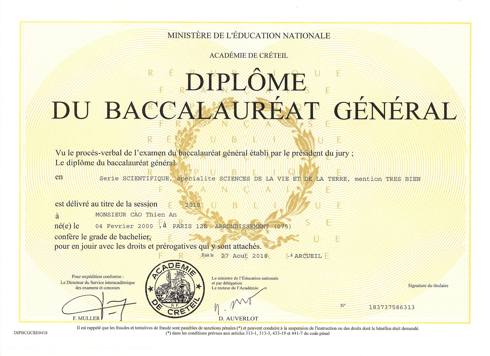
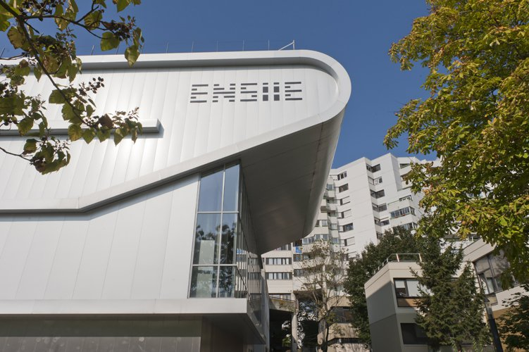
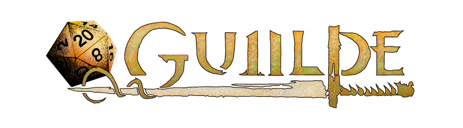
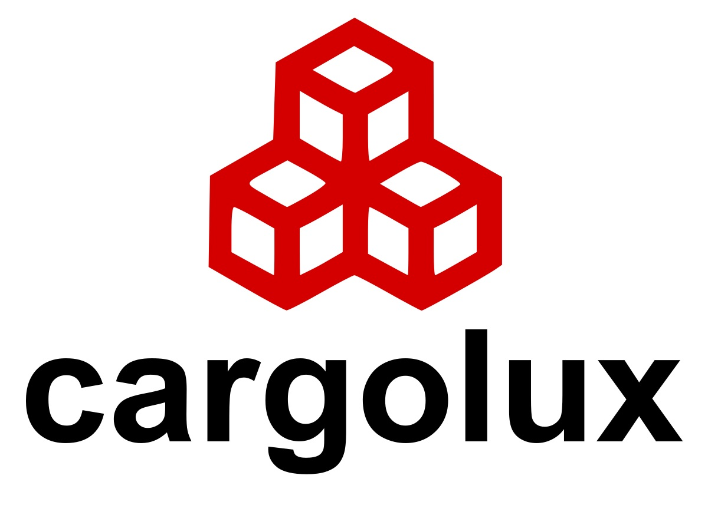

Ingénieur en informatique spécialisé en administration système et réseau de 23 ans habitant en France. Curieux et passionné, je m'intéresse à beacoup de domaines comme l'informatique, la physique ou encore l'histoire. Toujours à la recherche de nouvelle choses à apprendre, j'ai effectué mon stage de fin d'études en tant qu'administrateur réseau. Ce stage m'ayant grandement plu, j'ai décidé de m'orienté en tant qu'ingénieur réseau.
MON CV
2018

Baccalauréat
Obtiention de mon Baccalauréat Scientifique mention Très Bien après 3 années au Lycée Marcelin Berthelot.
2018

Classes Préparatoires
2 ans en Classes Préparatoires aux Grandes Ecoles d'Ingénieurs. J'ai effectué ma première année en MPSI et ma seconde année en MP* au Lycée Marcelin Berthelot.
2020

ENSIIE
Après les concours aux grandes écoles d'ingénieur, j'ai rejoins l'Ecole Nationale Supérieure d'Informatique pour l'Industrie et l'Entreprise (ENSIIE), une école d'ingénieur spécialisé dans les mathématiques et l'informatique. Durant mes 3 ans à l'ENSIIE, j'ai pris la spécialité HPC (High Performance Computing), cursus composé de cours traitant de la programmation à base de thread et de processus, de compilation, d'administration système et d'administration réseau.
2020

Associations
Durant mon temps à l'ENSIIE, j'ai participé à la vie associative de l'école. Je suis notamment devenu président de l'association de jeu de rôle de l'ENSIIE, ainsi que trésorier de l'association de dessin. Ces postes administratifs m'ont permis de découvrir le travail logistique, le travail d'équipe et la communication.
2021

Stage de première année
Mon stage de premier année est un stage de développement web chez l'Entreprise Dumas. Le but de ce stage était de refaire le tableau de bord de l'intranet de l'entreprise. J'ai travaillé sur un site web fait en Python avec le framework Pyramid.
2021
ARISE
En deuxième année, je me suis orienté sur un parcours HPC avec une spécialisation en administration système et réseau. Pour développer mes compétences dans ce domaine en dehors des cours, j'ai rejoins ARISE, l'association des Administrateurs du Réseau Informatique au Service des Etudiants. Pendant mon temps dans l'association, j'ai pu approfondir des connaissances dans le réseau, le DNS, le LDAP ou encore en maintenance de serveurs à travers différents projets internes de l'association.
2022
Stage de deuxième année
En deuxième année, j'ai effectué un stage d'administration système chez METRO France. L'objectif du stage était d'aider à la migration des serveurs de l'entreprise dans le cloud. Durant mon stage, je me suis occupé des vérifications des VMs Windows pour voir si la machine était bien à jour pour être migré. En parallème à cette tâche principale, je m'occupais aussi de la maintenance des machines encore onprem comme l'installation du SNMP pour la supervision.
2023

Stage de fin d'études
Mon stage de fin d'études a été un stage d'administration réseau avec un peu de DevOps chez Cargolux au Luxembourg. Les objectifs de ce stage était de proposer et développer une solution de sauvegardes des appareils réseaux. Le but était de proposer une interface web depuis laquelle l'équipe réseau pouvait vérifier l'état des sauvegardes et en lancer manuellement si la sauvegarde automatique avait ratée.